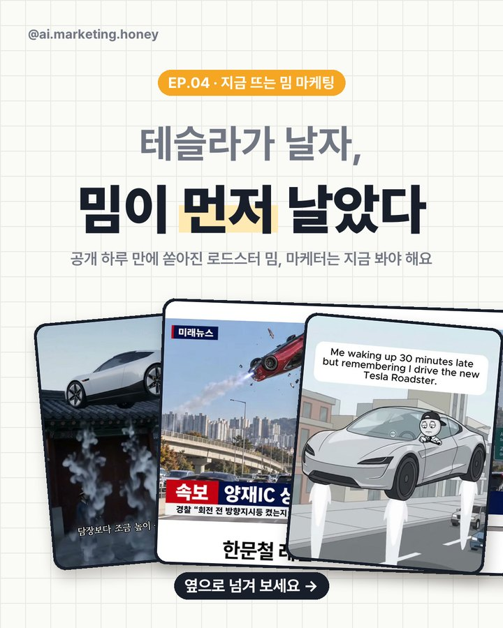
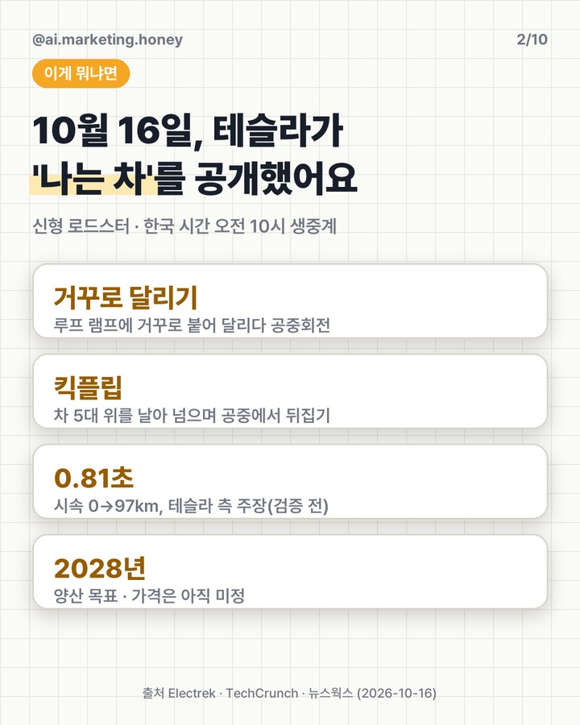
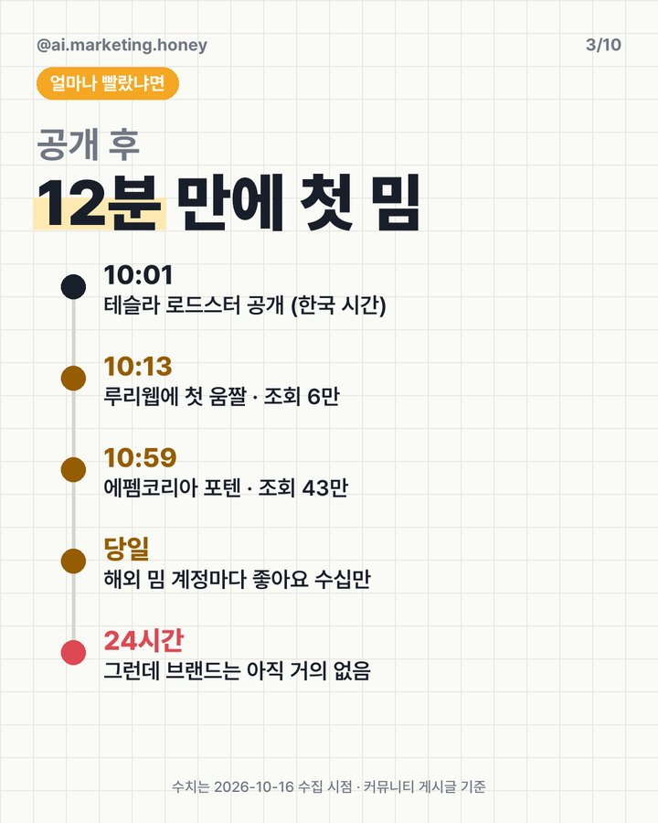
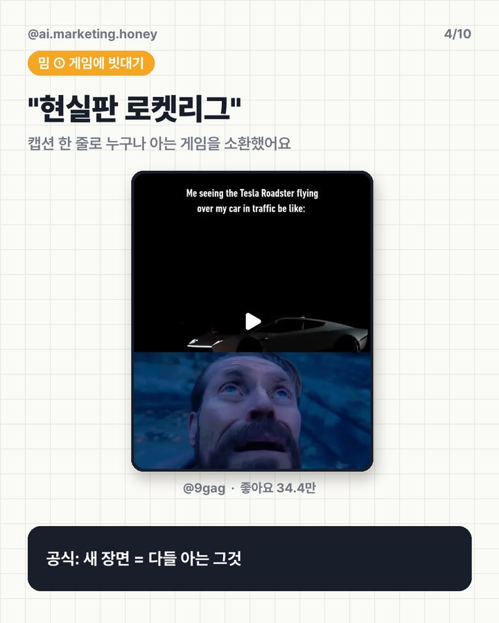
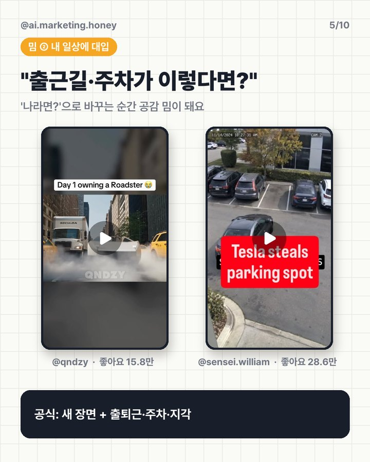
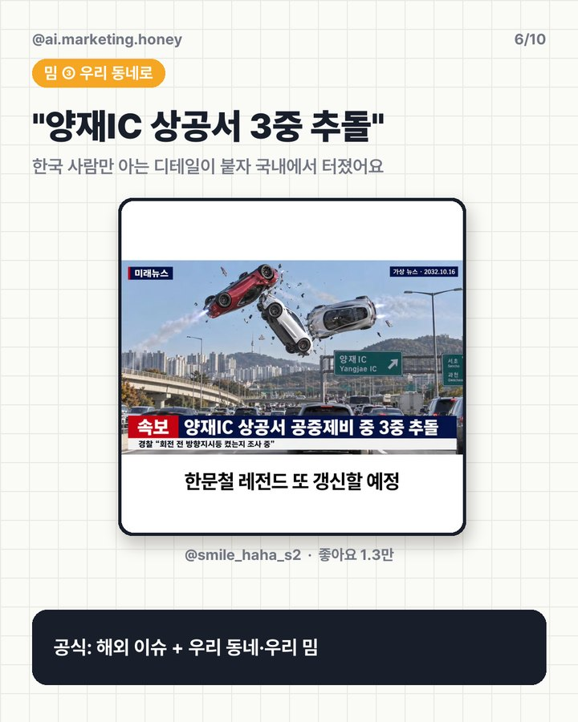
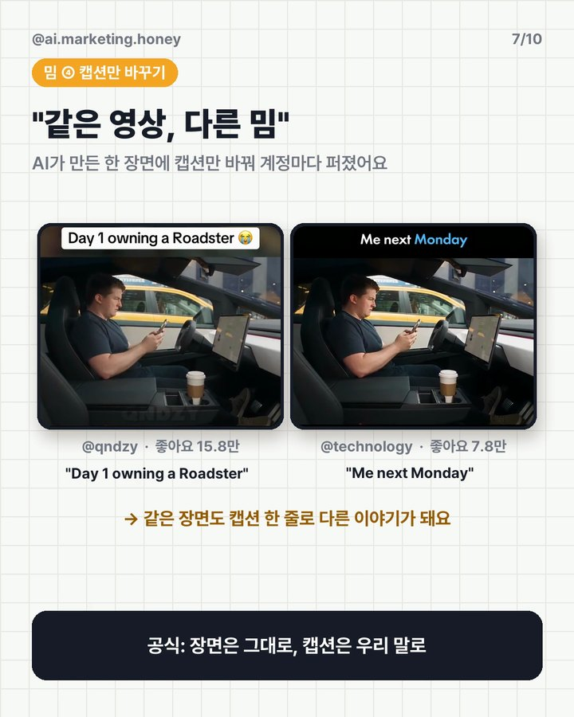
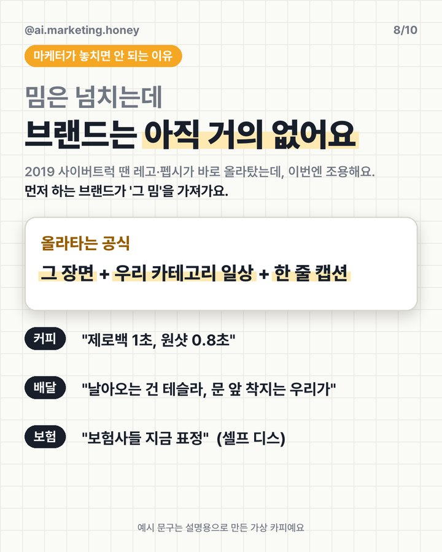
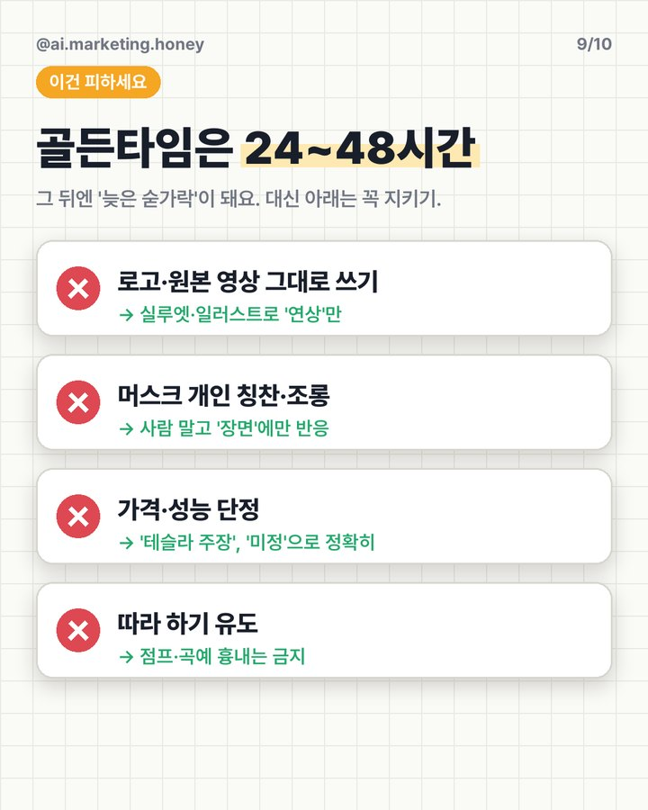

공개 12분 만에 첫 밈, 하루 만에 좋아요 수십만. 그런데 브랜드는 아직 거의 없어요. 다음 타이밍을 놓치지 않도록 시간대별 할 일과 바로 쓰는 프롬프트를 정리했어요.
출처: Electrek · TechCrunch · 뉴스웍스. 성능 수치는 독립 검증 전이에요.
"고종, 로드스터 타고 아관파천" — @oddarchive_404 (좋아요 1,001). 이미 뜨는 'AI 조선시대' 영상 포맷(조선시대 브이로그 5.8만, 타임슬립 2.6만 등)에 오늘 이슈를 얹었어요. 형식이 익숙하니 설명 없이 바로 웃겨요.
주차 자리, 지각 — @sensei.william (28.6만) · @antertained (12.8만). '나라면?'으로 바꾸면 공감 밈이 돼요.
"양재IC 상공서 공중제비 중 3중 추돌" — @smile_haha_s2 (1.3만). 한국 사람만 아는 디테일이 붙으면 국내에서 터져요.
같은 AI 영상에 "Day 1 owning a Roadster"(@qndzy, 15.8만), "Me next Monday"(@technology, 7.8만). 장면은 그대로 두고 캡션 한 줄로 다른 이야기를 만들었어요.
좋아요 수는 2026-10-16 수집 기준이에요. 국내 커뮤니티는 루리웹 첫 움짤이 10:13(조회 6만), 에펨코리아 포텐이 10:59(조회 43만)였어요.
그 장면 + 우리 카테고리 일상 + 한 줄 캡션
예) 커피 "제로백 1초, 원샷 0.8초" · 배달 "날아오는 건 테슬라, 문 앞 착지는 우리가" (설명용 가상 카피)
[이슈 이름] 관련 기사, 라이브 블로그, 커뮤니티 반응을 찾아서 정리해 줘. 1. 가장 많이 퍼진 장면 3개와 그 장면이 왜 웃긴지/놀라운지 2. 사람들이 반복해서 쓰는 캡션·드립 문구 5개 3. 공식 발표 수치 중 확인된 것과 아직 '주장'인 것 구분 출처 링크를 꼭 붙여 줘.
💡 숫자는 원문 링크로 한 번 더 확인하세요. 밈 타이밍일수록 틀린 사실이 제일 위험해요.
우리 브랜드는 [브랜드 한 줄 소개]야. 위에서 찾은 장면을 '그 장면 + 우리 카테고리 일상 + 한 줄 캡션' 공식으로 아이디어 20개 만들어 줘. 각 아이디어마다 인스타 캡션 1줄과 이미지 설명 1줄을 붙이고, 상표·정치·안전 리스크가 있으면 표시해 줘.
💡 20개 중 3개만 남기세요. 웃긴 것보다 '우리 고객이 바로 알아듣는 것'이 이겨요. 브랜드 가이드 스킬이 있다면 같이 쓰라고 하세요(EP.03).
아래 게시물 시안을 올리기 전에 점검해 줘. 1. 다른 회사 로고·원본 영상·사람 얼굴을 그대로 썼는지 2. 특정 인물을 칭찬하거나 조롱하는 표현이 있는지 3. 가격·성능을 확정된 것처럼 썼는지 4. 위험한 행동을 따라 하게 만드는지 문제가 있으면 고친 문구까지 제안해 줘. (여기에 시안 붙여 넣기)
영상이 움직이는 원본은 인스타 게시물에서 볼 수 있어요.









캐러셀 속 밈은 각 계정의 게시물이에요. 예시 카피는 설명용 가상 문구예요.
대행사에서 AI 교육하는 현직 마케터가 직접 써 보고 정리해요.
인스타에서 팔로우